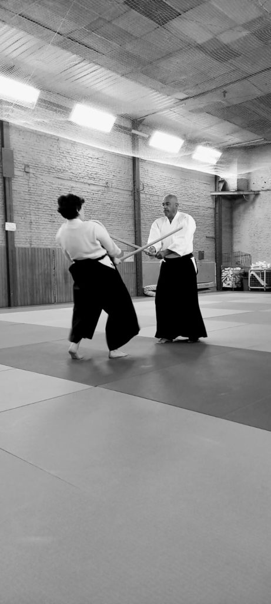

Aïkido
Professeurs :
- Jean-Philippe Wahl, 5e dan U.F.A.*, Brevet Fédéral
- Julien Dhuy, 4e dan U.F.A.*, Brevet Fédéral

Horaires (cours adultes)
- Lundi de 19h30 à 21h
- Jeudi de 19h30 à 21h
- Vendredi de 19h30 à 21h
Cours adultes à partir de 15 ans – cours d’essai et inscription possibles tout au long de l’année
L’Aïkido

L’Aïkido est un art martial d’origine japonaise, créé par Morihei Ueshiba au milieu du XXe siècle.
Il se pratique à mains nues et avec des armes. On y développe le relâchement, la souplesse, la mobilité, la réactivité, l’harmonie avec l’autre, la vigilance à son environnement. Il n’y a pas de compétition en aïkido.
L’aïkido est accessible à tous. Il se pratique à tous âges, toutes morphologies et genres confondus. Les cours du club sont accessibles à partir de 15 ans environ.
Le club de Lille est membre de la ligue Hauts-de-France d’Aïkido et affilié à la Fédération Française d’Aïkido et Budo (FFAB)

Frais d’inscription
- Frais d’adhésion au club lillois de Judo Kendo : 242 €
- Licence adulte (saison 2025/2026) : 38 €
- Licence moins de 13 ans (saison 2025/2026) : 28 €
Contact
mail : ---------
*Union des Fédérations d’Aïkido